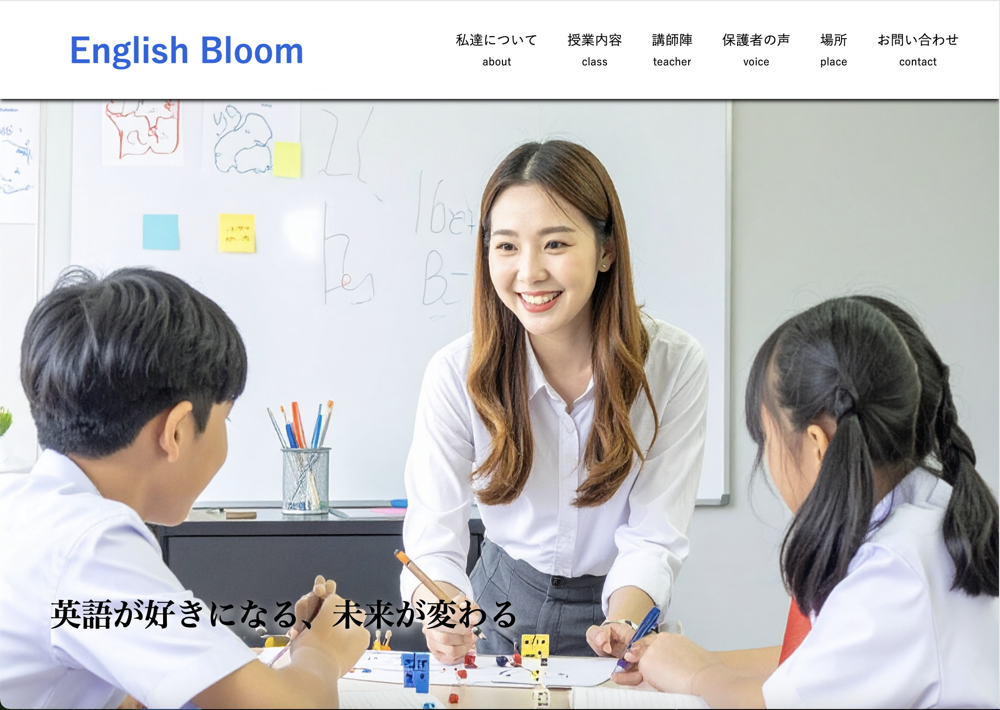

English Bloom(自主制作)

View More
- 概要
- 自主制作のオリジナルサイト
- 担当範囲
- 企画・ワイヤーフレーム・デザイン
- サイト規模
- 全1ページ
- 制作期間
- 1ヶ月2週間
企画・ワイヤーフレーム:2週間
デザイン:2週間
実装:2週間 - 使用ツール
- Vscode,figma
- 制作目的
- 保護者の子供をスクールへ入会させたいという意欲の醸成。保護者がサイトを見た時に、自分の子供がスクールに通い英語やサッカーに興味を持つ事をイメージできるようなサイトを作る。
- ターゲット
- 10歳〜15歳までの保護者
- 情報設計
- 今回のポートフォリオは、**「英語が苦手な方にも楽しさが伝わる、かつ忙しい方にも印象に残るサイト」**を目指しました。English Bloomのサイト紹介では、まずプロジェクトの概要をシンプルに伝え、その後に詳細な情報へと興味を持ってもらえるような構成を意識しています。プロジェクトの目的、授業内容、担当講師など、クライアントが特に知りたい情報を明確に記載し、必要な情報に素早くアクセスできる構成にしています。
- デザイン
- English Bloomのポートフォリオでは、**「安心感と知的な楽しさ」**というコンセプトを表現しました。
・キーワード: 「安心感」と「知的な楽しさ
・配色: English Bloomのテーマカラーである、親しみやすい青と緑を基調とし、クリーンで安心感のある印象を与えます。
・フォント: 全体的に読みやすく、落ち着いた雰囲気のフォントを使用し、子ども向けのサイトでありながらも、保護者が信頼できるプロフェッショナルな印象を両立させました。
・レイアウト: シンプルな2カラムレイアウトを中心に、プロジェクトのスクリーンショットを大きく見せることで、視覚的な訴求力を高めています。また、適度な余白を設けることで、情報が整理されて見え、より洗練された印象を与えています。